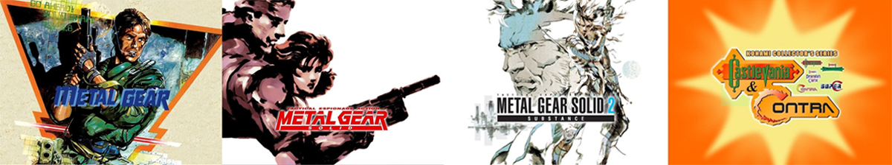

'Metal Gear', 'Castlevania' y 'Contra' llegan a PC, así puedes volver a jugar los clásicos de Konami en México
 25 de Septiembre 2020
Las filtraciones lo adelantaron, pero ahora es oficial: 'Metal Gear', 'Castlevania' y 'Contra' llegan a PC. Los tres grandes clásicos de Konami están disponibles a través de la plataforma GOG, reveló la compañía en Twitter, para jugar en computadoras.
La saga 'Metal Gear' es una de las más importantes y queridas en todo el ecosistema de videojuegos, es por eso que la llegada de los títulos a PC es importante. En GOG están disponibles los tres primeros juegos:
- Metal Gear - 5.40 dólares
- Metal Gear Solid - 9.08 dólares
- Metal Gear Solid 2: Substance - 9.08 dólares
Además, también está disponible un recopilatorio que incluye cinco juegos de 'Castlevania' y 'Contra': Castlevania, Castlevania II: Simon's Quest, Castlevania III: Dracula's Curse, Contra y Super C.
- Konami Collector's Series: Castlevania & Contra - 5.44 dólares
Todos los videos juegos requieren al menos 2 GB de RAM y son compatible con Windows 7, 8 y 10, asi como con controles de Xbox 360 y Xbox One, y se pueden comprar para jugar en México, solo creando una cuenta en GOG